Randomization Examples using okcupiddata profiles data
Chester Ismay
2018-05-12
Source:vignettes/profiles_examples.Rmd
profiles_examples.RmdNote
There has been some recent controversy surrounding data of this sort similar to what is given in the {okcupiddata} package. Explicit permission was obtained from OkCupid and usernames were not included in the data set for that package. Its use here is only to check for a variety of different variable types and levels. It will remain only in this “cutting edge” version of the package as we continue to add and test examples.
Data preparation
library(okcupiddata)
#remotes::install_github("andrewpbray/infer", ref = "develop")
library(infer)
set.seed(2017)
prof_small <- profiles %>%
na.omit() %>%
dplyr::sample_n(size = 500) %>%
dplyr::mutate(city = dplyr::case_when(
stringr::str_detect(location, "san fran") ~ "san fran",
!stringr::str_detect(location, "san fran") ~ "not san fran"
)) %>%
dplyr::select(age, sex, city, drugs, height, status)-
heightandageare numerical variables. -
sexhas two categories ("m","f") -
cityhas two categories ("san fran","not san fran") -
drugshas three categories ("never","sometimes","often") - Also has missing values -
statushas three categories ("single","available","seeing someone")
Hypothesis tests
One numerical variable (mean)
x_bar <- prof_small %>%
dplyr::summarize(mean(age)) %>%
dplyr::pull()
prof_small %>%
specify(response = age) %>% # alt: age ~ NULL (or age ~ 1)
hypothesize(null = "point", mu = 34) %>%
generate(reps = 1000) %>%
calculate(stat = "mean") %>%
visualize(obs_stat = x_bar, direction = "both")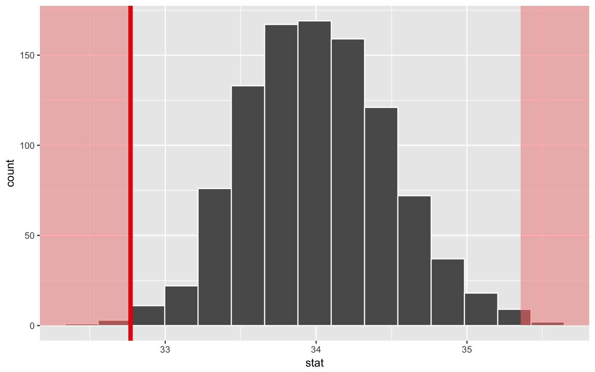
One numerical variable (median)
x_tilde <- prof_small %>%
dplyr::summarize(median(age)) %>%
dplyr::pull()
prof_small %>%
specify(response = age) %>% # alt: age ~ NULL
hypothesize(null = "point", med = 29) %>%
generate(reps = 1000) %>%
calculate(stat = "median") %>%
visualize(obs_stat = x_tilde, direction = "both")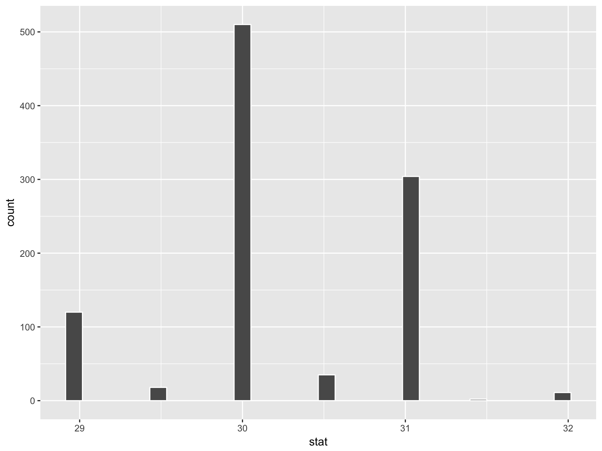
One categorical (2 level) variable
p_hat <- prof_small %>%
dplyr::summarize(mean(sex == "f")) %>%
dplyr::pull()
prof_small %>%
specify(response = sex, success = "f") %>%
hypothesize(null = "point", p = c("f" = .35)) %>%
generate(reps = 1000) %>%
calculate(stat = "prop") %>%
visualize(obs_stat = p_hat, direction = "right")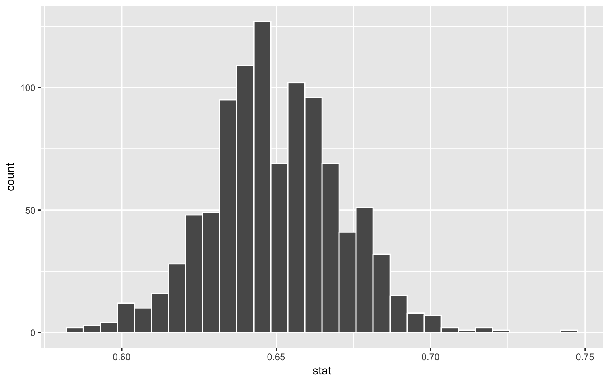
Two categorical (2 level) variables
obs_diff <- prof_small %>%
dplyr::group_by(city) %>%
dplyr::summarize(prop = mean(sex == "m")) %>%
dplyr::summarize(diff(prop)) %>%
dplyr::pull()
prof_small %>%
specify(sex ~ city, success = "m") %>%
hypothesize(null = "independence") %>%
generate(reps = 1000) %>%
calculate(stat = "diff in props", order = c("san fran", "not san fran")) %>%
visualize(obs_stat = obs_diff, direction = "both")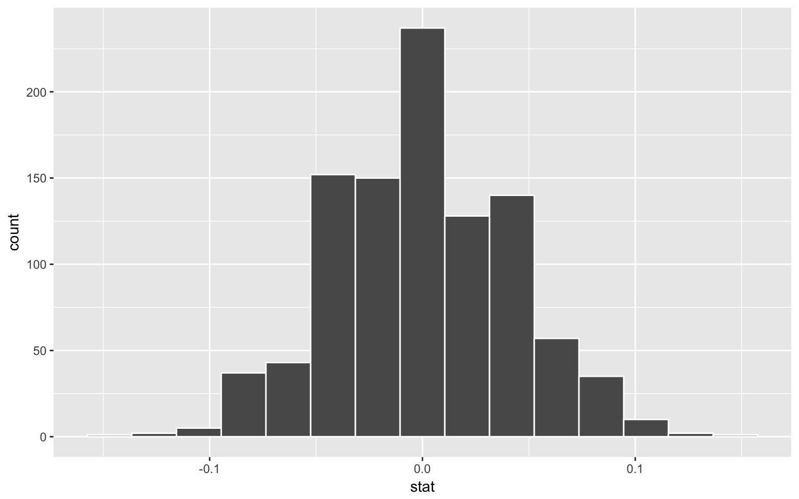
One categorical (>2 level) - GoF
Chisq_hat <- chisq.test(table(prof_small$drugs))$stat
prof_small %>%
specify(drugs ~ NULL) %>% # alt: response = drugs
hypothesize(null = "point",
p = c("never" = .7, "sometimes" = .25, "often" = .05)) %>%
generate(reps = 1000) %>%
calculate(stat = "Chisq") %>%
# Only "right" or "greater" as options here
visualize(obs_stat = Chisq_hat, direction = "right")
Two categorical (>2 level) variables
Chisq_hat <- prof_small %>% chisq_stat(formula = drugs ~ status)
prof_small %>%
specify(drugs ~ status) %>% # alt: response = drugs, explanatory = status
hypothesize(null = "independence") %>%
generate(reps = 1000) %>%
calculate(stat = "Chisq") %>%
# Only "right" or "greater" as options here
visualize(obs_stat = Chisq_hat, direction = "right")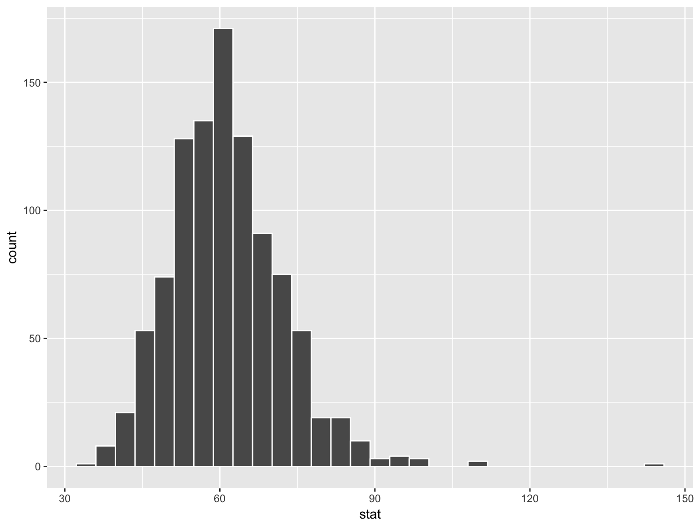
One numerical variable, one categorical (2 levels) (diff in means)
obs_diff <- prof_small %>%
dplyr::group_by(sex) %>%
dplyr::summarize(mean_age = mean(age)) %>%
dplyr::summarize(diff(mean_age)) %>%
dplyr::pull()
prof_small %>%
specify(age ~ sex) %>% # alt: response = age, explanatory = sex
hypothesize(null = "independence") %>%
generate(reps = 1000) %>%
calculate(stat = "diff in means", order = c("m", "f")) %>%
visualize(obs_stat = obs_diff, direction = "both")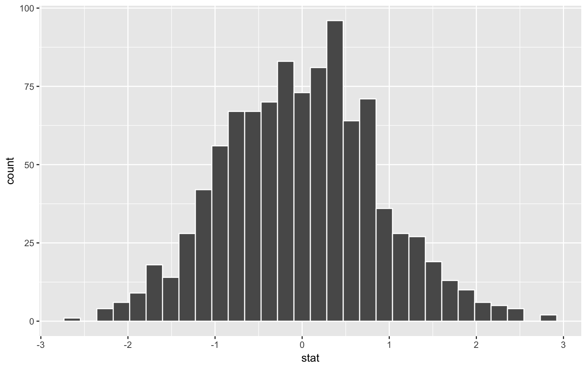
One numerical variable, one categorical (2 levels) (diff in medians)
obs_diff <- prof_small %>%
dplyr::group_by(sex) %>%
dplyr::summarize(median_age = median(age)) %>%
dplyr::summarize(diff(median_age)) %>%
dplyr::pull()
prof_small %>%
specify(age ~ sex) %>% # alt: response = age, explanatory = sex
hypothesize(null = "independence") %>%
generate(reps = 1000) %>%
calculate(stat = "diff in medians", order = c("m", "f")) %>%
visualize(obs_stat = obs_diff, direction = "two_sided")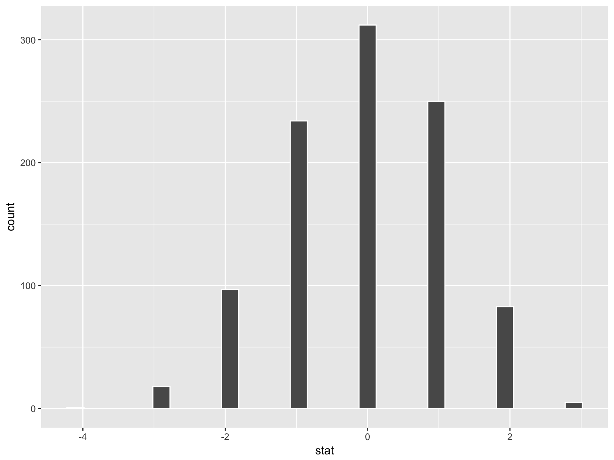
One numerical one categorical (>2 levels) - ANOVA
F_hat <- anova(
aov(formula = age ~ status, data = prof_small)
)$`F value`[1]
prof_small %>%
specify(age ~ status) %>% # alt: response = age, explanatory = status
hypothesize(null = "independence") %>%
generate(reps = 1000) %>%
calculate(stat = "F") %>%
# Only "right" or "greater" as options here
visualize(obs_stat = F_hat, direction = "greater")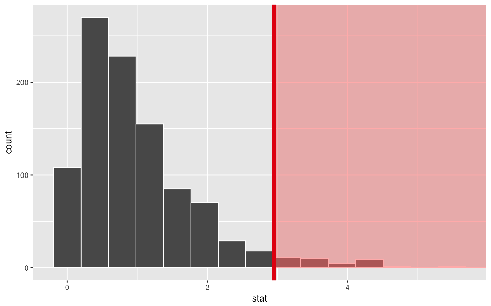
Two numerical vars - SLR
slope_hat <- lm(age ~ height, data = prof_small) %>%
broom::tidy() %>%
dplyr::filter(term == "height") %>%
dplyr::select(estimate) %>%
dplyr::pull()
prof_small %>%
specify(age ~ height) %>% # alt: response = age, explanatory = height
hypothesize(null = "independence") %>%
generate(reps = 1000) %>%
calculate(stat = "slope") %>%
visualize(obs_stat = slope_hat, direction = "both")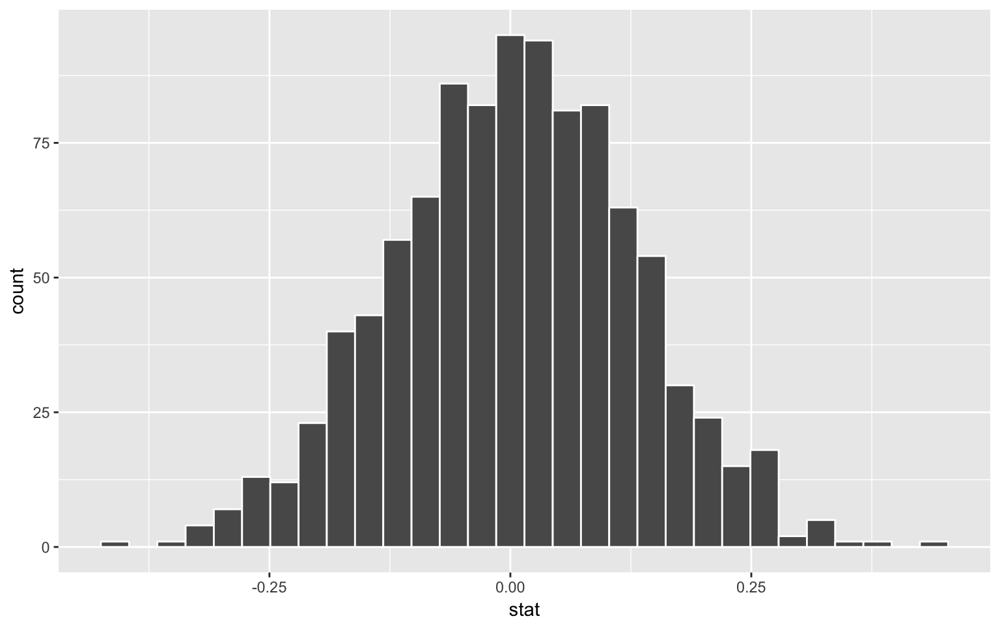
Confidence intervals
Confidence interval shading is not implemented yet
One numerical (one mean)
prof_small %>%
specify(response = age) %>%
generate(reps = 1000) %>%
calculate(stat = "mean") %>%
visualize()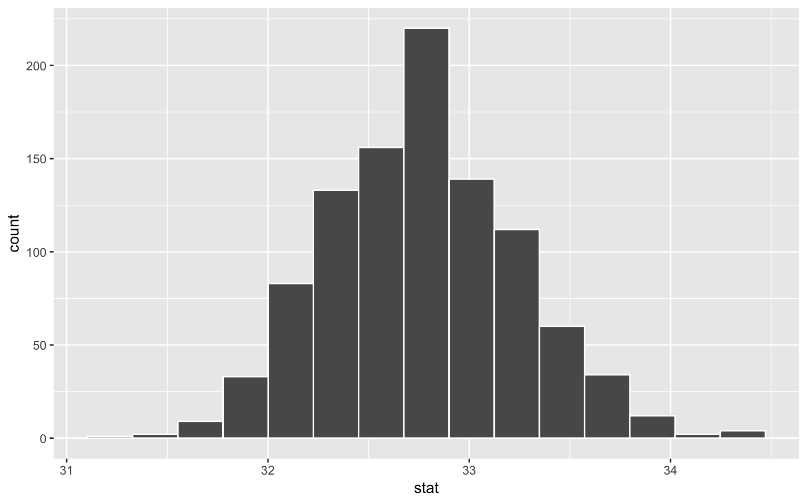
One numerical (one median)
prof_small %>%
specify(response = age) %>%
generate(reps = 1000) %>%
calculate(stat = "median") %>%
visualize()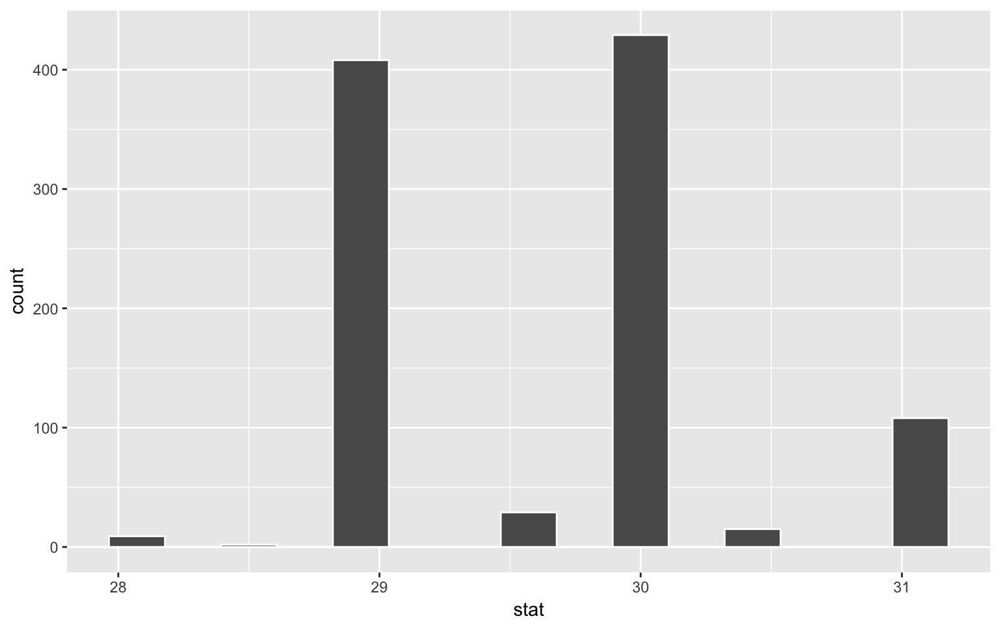
One categorical (one proportion)
prof_small %>%
specify(response = sex, success = "f") %>%
generate(reps = 1000) %>%
calculate(stat = "prop") %>%
visualize()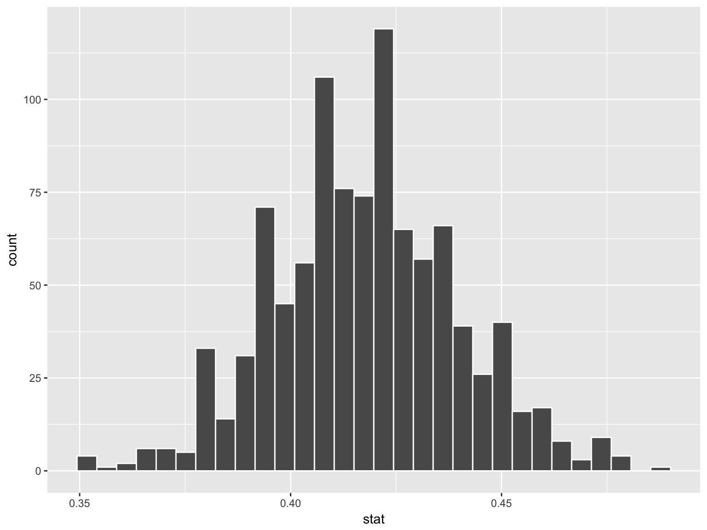
One numerical variable one categorical (2 levels) (diff in means)
prof_small %>%
specify(age ~ sex) %>%
generate(reps = 1000) %>%
calculate(stat = "diff in means", order = c("m", "f")) %>%
visualize()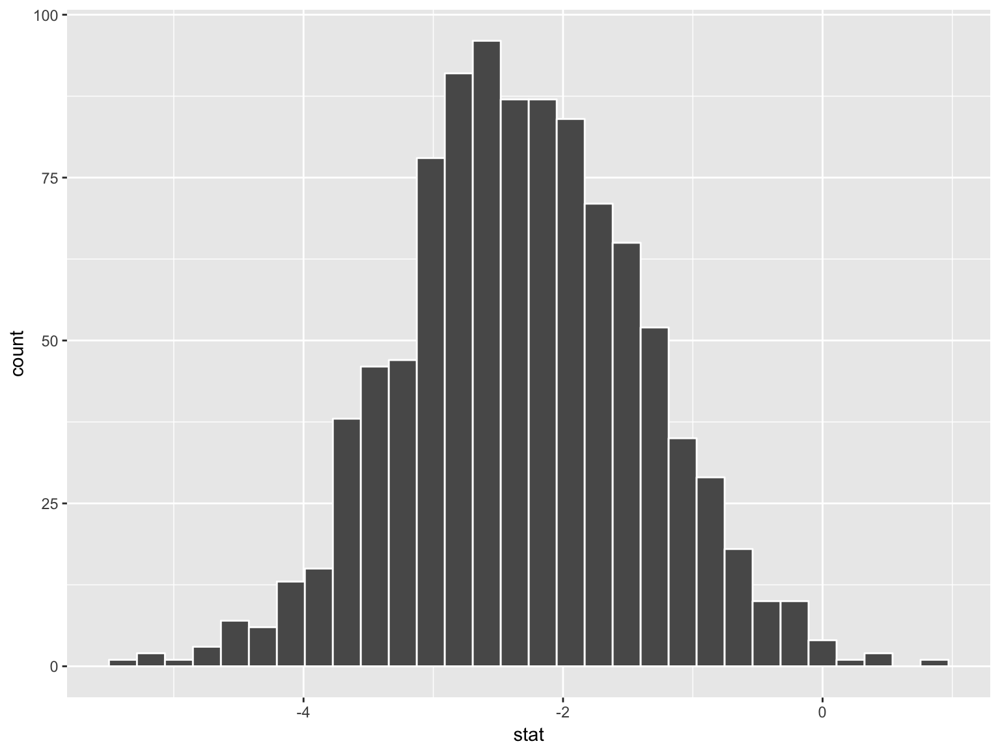
Two categorical variables (diff in proportions)
prof_small %>%
specify(sex ~ city, success = "m") %>%
generate(reps = 1000) %>%
calculate(stat = "diff in props", order = c("san fran", "not san fran")) %>%
visualize()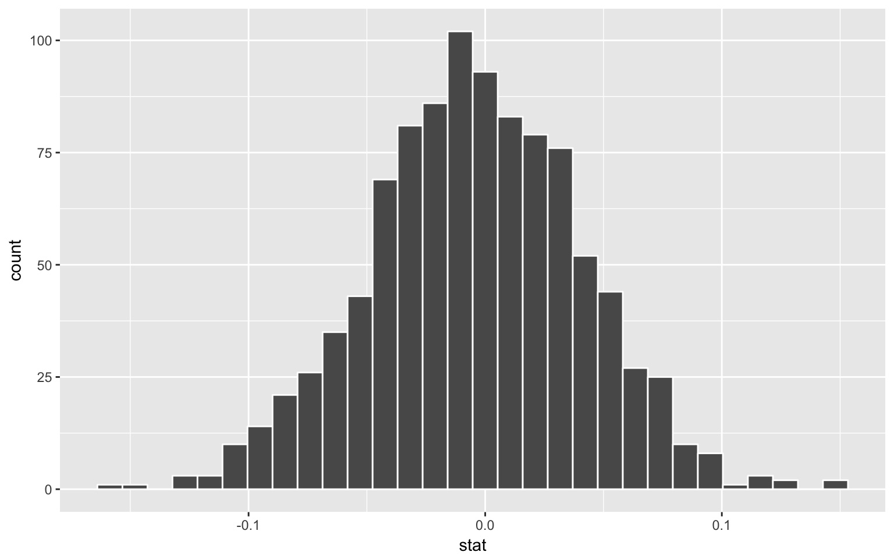
Two numerical vars - SLR
prof_small %>%
specify(age ~ height) %>%
generate(reps = 1000) %>%
calculate(stat = "slope") %>%
visualize()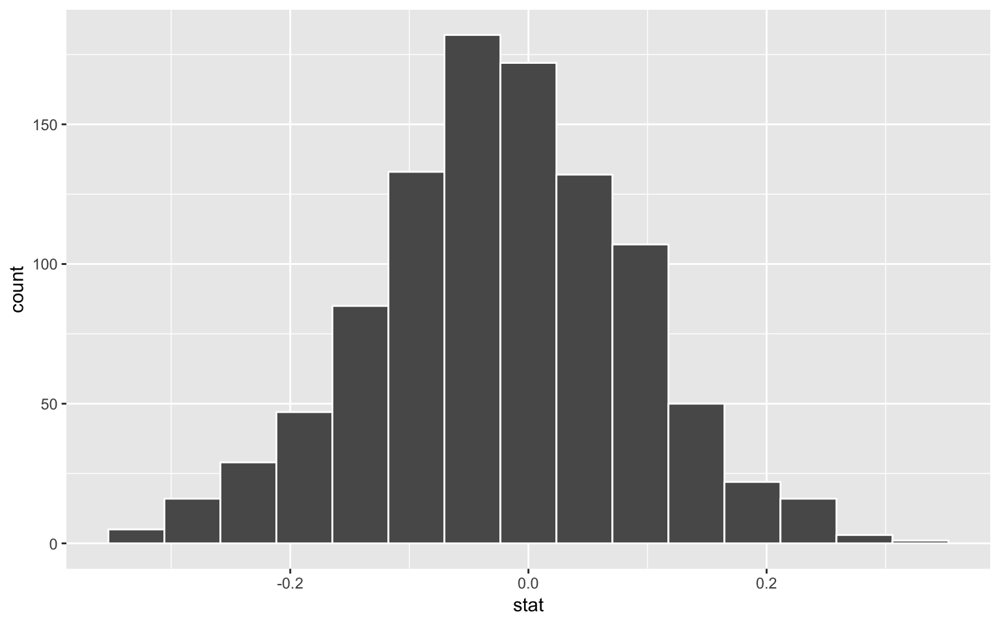